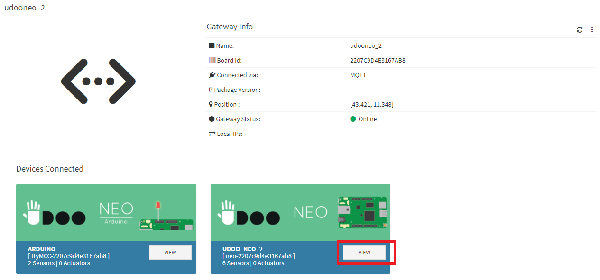
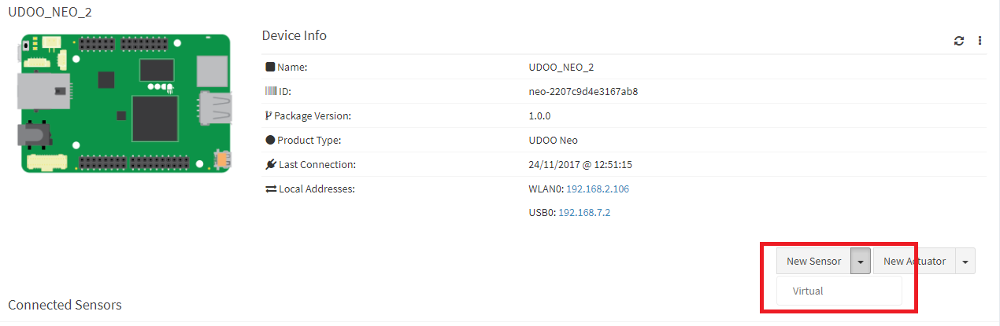
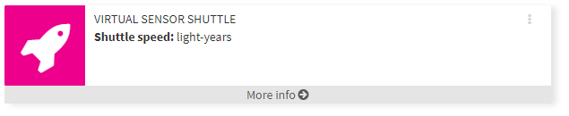
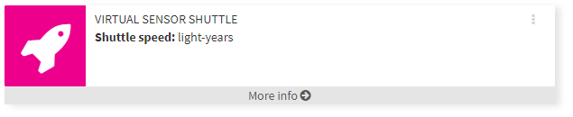
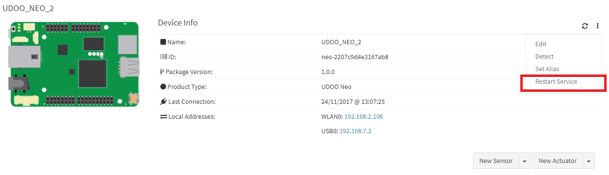

UDOO IoT Documentation
UDOO IoT Documentation
Set a Virtual Sensor
Following the next steps to create and work with a Virtual Sensor.
Setup the Virtual Sensor on the UDOO IoT Cloud Server
Select the gateway and choose the right UDOO device.
Press on the New Sensor drop down menu (not the button) and choose Virtual.
Enter the __NAME_OF_THE_SENSOR__ as the folder created on the client.
Enter the display name and choose an icon to be displayed in the widget, whatever.
Select an update time, because the sensor value will be updated only when the value change.
Select online notification.
Value types provides a description of the sensor and the measure unit if desired.
Press the Save button to save the configuration.
The Virtual Sensor is shown now in a widget and come DISABLED by default.
Enable the Virtual Sensor by press the Enable button in the 3-dot menu.
 

Restart the UDOO IoT Client Service using the button Restart Service in the 3-dot menu of the device in top of the page.
Now the Virtual Service is up and running listening to the changes in the /sensors/virtual/__NAME_OF_THE_SENSOR__/data file.
Interact with the file in the UDOO IoT Client
Once the Virtual Sensor is set up, a folder and a file are automatically created in /sensors/virtual/ with the name of the virtual sensor created
/sensors/virtual/__NAME_OF_THE_SENSOR__/
/sensors/virtual/__NAME_OF_THE_SENSOR__/data
In this example we'll call the the Virtual Sensor vstest so these file created are:
/sensors/virtual/vstest/
/sensors/virtual/vstest/data
The data file should be already accessible both by the application that will changes values and by the UDOO IoT Client. If the file is not accessible change the permissions in this way:
chmod 666 /sensors/virtual/vstest/data
Input File
The format of the data file must be:
__VALUE__
Every time the __VALUE__ changes the UDOO IoT Cloud Client is notified and upload the data in the UDOO Cloud Server.
Now you can use an application or script wrote in any language (c, java, python...) to open the data file and change the value wrote inside to have the same data uploaded to the UDOO IoT Cloud Server.
In the next page you can find some example of how to write a software that use the Virtual Sensor.